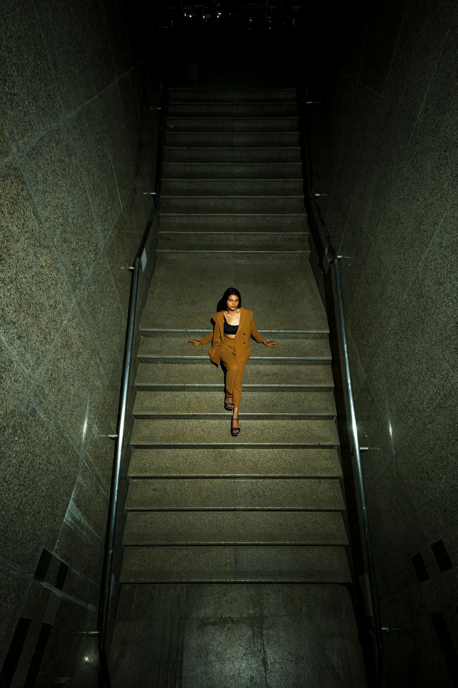

Every frame
we kept, sorted
by year and brief.
The full Brivon archive is not online — clients keep what is delivered. What follows is a tight working selection: twelve featured projects, then a paginated archive of every campaign we have shipped since the studio opened in October 2014.

Twelve projects
worth a second look.
Browse by discipline, or scroll through chronologically. Most projects shipped between 2023 and 2025 — the studio retired the public 2014–22 archive in March 2024.
Atrium SS25 —
four days, four
moods, one light.
The Atrium SS25 lookbook ran over four days in Lisbon in late February 2025. The brief asked for a single continuous lighting fingerprint across four very different locations — a 17th-century monastery cloister, a working ceramics studio, a tile-clad municipal pool, and the rooftop of the brand's flagship store on Rua da Misericórdia.
The brief did not say "soft." It said "honest." We brought a 4×6 silk and stopped using softboxes after day one. — Mira Halden, lead
We landed on a single 4×6 silk diffusing the existing daylight, supplemented with a Profoto B10X for fill in the colder afternoon sessions and a hand-held Aputure MC for the indoor still frames. The colour reference was a slate-grey card; the colour decision was a faintly cool fall-off in the shadows. Thirty-six frames were chosen for the lookbook, twelve of those for the wholesale presentation, four for the campaign edit. Total time from shoot wrap to first delivered selects: thirty-eight hours.
Read the full case studyThe recent archive.
Project listing only — selects shipped privately to each client. For older work, please contact the studio and we will send a passworded archive link.
- No. 142Atrium · SS25 Lookbook · Editorial · Lisbon · Feb 2025
- No. 141Vorbild Magazine · Issue 11 Cover · Editorial · Brooklyn · Jan 2025
- No. 140Hesse & Co · FW25 Catalogue · Campaign · Berlin · Jan 2025
- No. 139Maison Stól · Furniture Catalogue · Still · Copenhagen · Dec 2024
- No. 138Linnaea Skin · Holiday Edition · Product · Brooklyn · Dec 2024
- No. 137Theatre du Nord · Season Posters · Editorial · Antwerp · Nov 2024
- No. 136Kunsthaus Folder · Yearbook 2024 · Architecture · Zurich · Nov 2024
- No. 135Norman Kettle · Single Product · Campaign · Brooklyn · Oct 2024
- No. 134Salt & Ember · Cookbook · Food · Andalusia · Sep 2024
- No. 133Atrium · FW24 Press · Editorial · Lisbon · Sep 2024
- No. 132Bregman Watches · Caliber 04 · Product · Berlin · Aug 2024
- No. 131Henning Vorstad · Studio Portrait · Portrait · Stockholm · Jul 2024
See something
you would like
the studio to make next?
Tell us about the brief — moodboard, references, working dates, the audience. We will get back the same week with availability and a first read on scope.